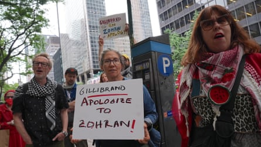

The New York Democrat senator Kirsten Gillibrand has apologized to Zohran Mamdani , the party nominee for New York City mayor, for comments she made claiming that Mamdani had made “references to global jihad”.
“Gillibrand apologized for mischaracterizing Mamdani’s record and for her tone on the call,” according to a readout of a phone call between Gillibrand and Mamdani that was obtained by Politico.
The apology comes after an interview the Democratic senator gave to the Brian Lehrer radio show last week in which Gillibrand was asked if she would hold Mamdani accountable for “glorifying” Hamas.
That was prompted by an ongoing controversy over Mamdani – who would become New York City’s first Muslim mayor if he wins the election – declining to condemn the phrase “globalize the intifada” while also emphasizing that he plans, if elected, to be a mayor “that protects Jewish New Yorkers”.
Gillibrand said in the interview that Jewish New Yorkers were alarmed by Mamdani’s statements. While there is no evidence that Mamdani supports the Palestinian militant group, the city has been host to scores of pro-Palestinian protests. Some critics have called them antisemitic.
Reacting to a listener’s call-in question, Gillibrand said she would like to talk through the issues with Mamdani and that he should denounce the phrase “globalize the intifada”.
Gillibrand said that her constituents in upstate New York were “alarmed” by Mamdani’s past public statements, “particularly references to global jihad. This is a very serious issue because people that glorify the slaughter of Jews create fear in our communities.”
Mamdani argues that the phrase “globalize the intifada” has been deliberately misinterpreted to smear him and others who stand up for Palestinian rights.
He also said in an MSNBC interview that comments like Gillibrand’s represented “a language of darkness and a language of exclusion”.
Mamdani supporters have protested outside Gillibrand’s office and called for her resignation.
“I find it disgusting that someone who is one of the most powerful people in this country would repeat rightwing talking points to diminish” Mamdani, said the New York state representative Emily Gallagher.
A group of Democratics protest in front of Senator Kirsten Gillibrand's office on Friday evening about her remarks made on WNYC radio's Brian Lehrer Show.Photograph: Anadolu/Getty Images
Gillibrand’s comments also appeared to be rebuked by New York’s governor, Kathy Hochul, who said, “no one should be subjected to any comments that slur their ethnicity, their religious beliefs, and we condemn that anywhere it rears its head in the state of New York.”
Gillibrand had earlier backed away from her comment, releasing a statement on Friday saying she “misspoke”.
In Gillibrand’s call with Mamdani, they “discussed the need to bring down the temperature around the issue” of the war between Israel and Hamas, and that she “regretted not separating her own views from the radio show caller’s more clearly”.
“Gillibrand said she believes Mr Mamdani is sincere when he says he wants to protect all New Yorkers and combat antisemitism,” the readout continued. “She said the GOP attacks on him are outrageous and unacceptable.”
Those attacks continued on Tuesday when Donald Trump reasserted an earlier statement branding Mamdani as a communist, which Mamdani denies, and threatened to cut off federal funds to New York City if Mamdani becomes mayor and “doesn’t behave himself”.
“We don’t need a communist in this country, but if we have one, I’m going to be watching over him very carefully on behalf of the nation. We send him money, we send him all the things that he needs to run a government,” Trump said.
Trump also made a baseless allegation that Mamdani, 33, who was born in Uganda to ethnic Indian parents and became a US citizen in 2018, obtained his citizenship “illegally”.
The Trump administration is engaged in an aggressive effort to deport foreign-born citizens convicted of certain offenses, and Mamdani has pledged to maintain New York City as a “sanctuary” city that resists federal deportation efforts.
Eric Adams, the incumbent mayor who is running as an independent in November’s election, has said the city would not stand in the way of immigration authorities. “The federal government is in charge of immigration enforcement, but we are not gonna collaborate with civil enforcement, and we’re gonna encourage people to not live in fear and go on with their lives,” he said last month.
According to a Bloomberg report this week , more than 1,900 people have been arrested in New York City by federal immigration authorities since Trump’s inauguration, a 31% increase from the same period last year, according to figures obtained by the Deportation Data Project , which is so far a smaller percentage rise than in Los Angeles (112%), Chicago (97%) and Miami (238%).